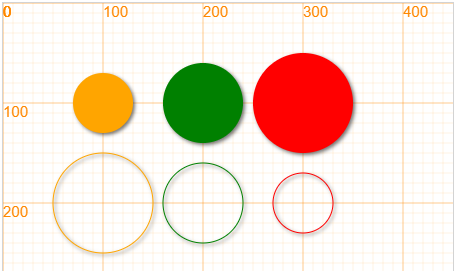
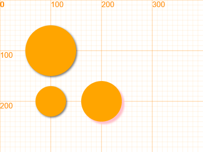

圆 circle¶
在开始介绍圆之前，让我们来制作一个简单的彩虹图画。如果你成功的按下面的步骤一步步的完成，那么最终的效果图应该是这样的效果：
第1步：我们将画布调整为400 x 400大小，并将画布填满lightblue颜色
canvas.resize(400, 400);
rectangle(0, 0, 400, 400, "lightblue");
第2步：画下第一个圆
circle(200, 200, 200, "red");
第3步：按照顺序，一步步的将其他圆补齐：
circle(200, 200, 190, "orange");
circle(200, 200, 180, "yellow");
circle(200, 200, 170, "green");
circle(200, 200, 160, "cyan");
circle(200, 200, 150, "blue");
circle(200, 200, 140, "purple");
第4步，我们用一个和天空颜色一样的圆将现在的圆挖空
circle(200, 200, 130, "lightblue");
最后一步，改变画布的高度，也就是调整第一行的代码，让我们只能看到彩虹的上半部分。
// line 1
canvas.resize(400, 200);
绘制方法 circle¶
circle(x, y, r, *color)
/**************************
x - x坐标
y - y坐标
r - 半径
color - 颜色，默认为orange
**************************/
示例代码
canvas.showAxis();
circle(100, 100, 30);
circle(200, 100, 40, 'green');
circle(300, 100, 50, 'red');
// 如果想要画圆框，在使用circle之前，使用fill方法
fill(false);
circle(100, 200, 50);
circle(200, 200, 40, 'green');
circle(300, 200, 30, 'red');
运行效果：

圆形对象 Circle¶
class Circle(x, y, radius)
/***************************************************************
圆类
x, y: 圆的圆心位置
radius: 圆的半径
***************************************************************/
属性值¶
坐标值 x,y¶
圆心的坐标值
半径 r / radius¶
等价属性，可以任意使用其中一个
例子
canvas.showAxis();
var c = new Circle(100, 100, 50); // x, y, rX, rY
c.lineWidth = 3;
c.strokeStyle = "red";
c.fillStyle = "orange";
c.draw();
c.y += 100;
c.r = 30;
c.fill();
c.x += 100;
c.radius = 40; // both radius or r works
c.shadowColor = 'pink';
c.shadowBlur = 4;
c.shadowOffsetX = 5;
c.shadowOffsetY = 5;
c.fill();
运行效果
